Tipografía
Imagina. Construye.
Sistema sans · cuerpo 16 px · interlineado 1.5 · metadatos 14 px.
Explora cada ruta, revisa estados locales de prueba y alterna capturas anteriores con F16 cuando sus dimensiones coinciden. Las comparaciones históricas proceden de `baseline/` y `current/`; las tomas finales de interacción están marcadas cuando usan datos sintéticos.
#030407 · canvas#1558C9 · marca / navegación#D4FF24 · acciones / focoSistema sans · cuerpo 16 px · interlineado 1.5 · metadatos 14 px.
Escala base 4 px · gutters 16 / 24 / 32 px · radio controles 8 px.
Iconos de acción acompañados de texto. Pixel art aprobado conservado. Movimiento breve; `prefers-reduced-motion` elimina animación decorativa.
Comparaciones antes/después de los cinco hallazgos. Las capturas F16 originales se conservan; las nuevas se tomaron con Ego Lite usando fixtures locales. Los datos de proyecto y las sesiones son sintéticos.
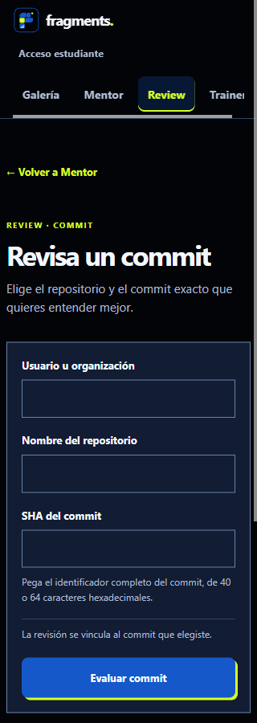
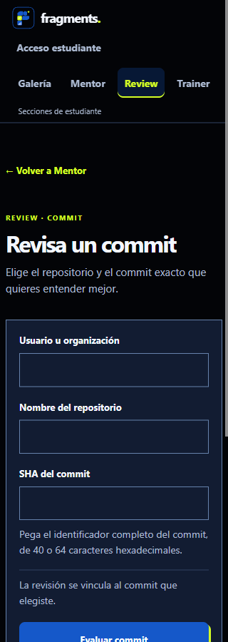
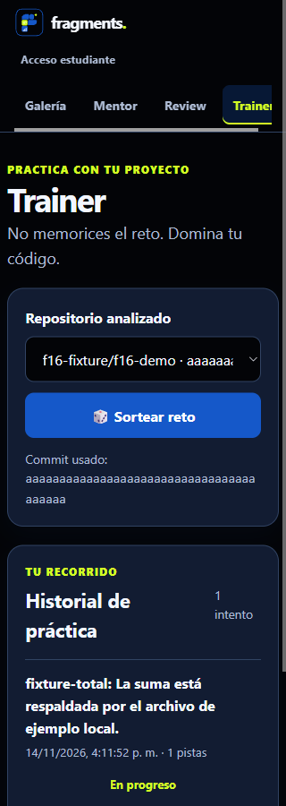
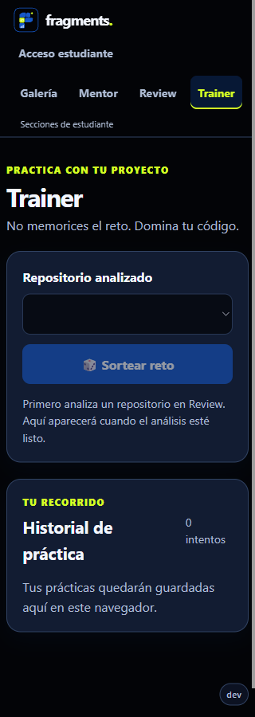
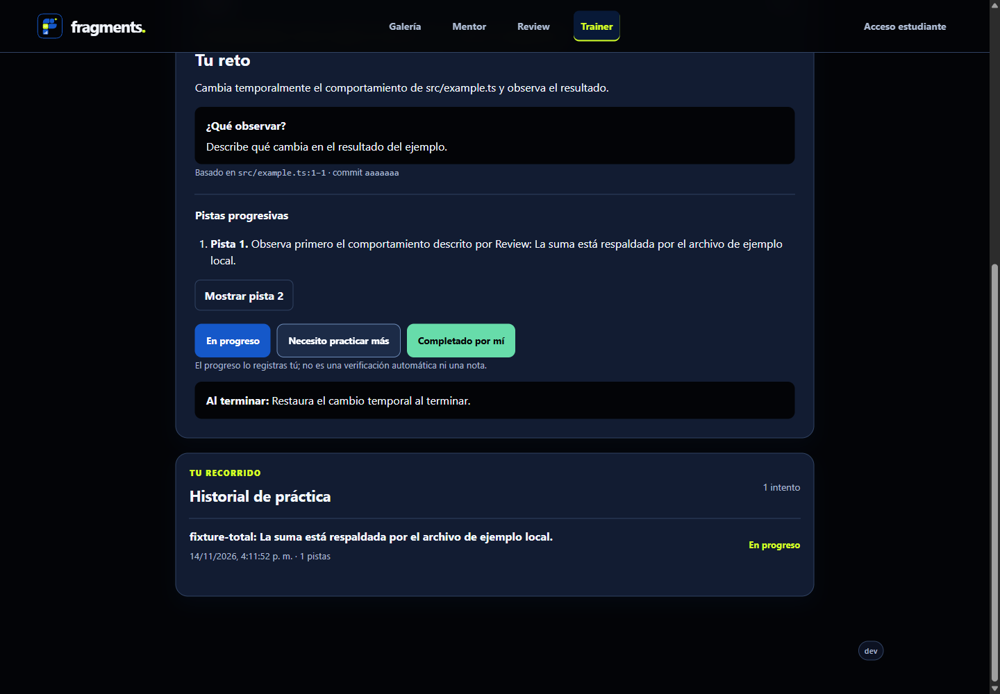
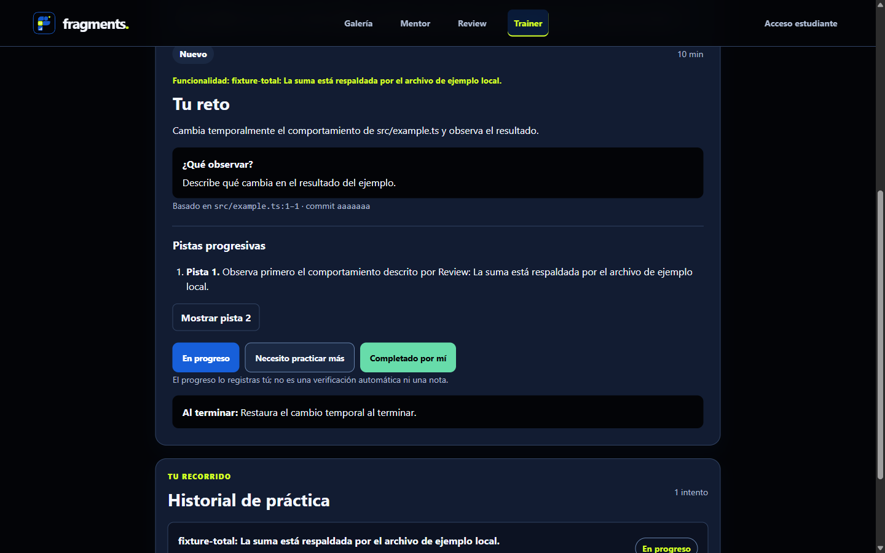
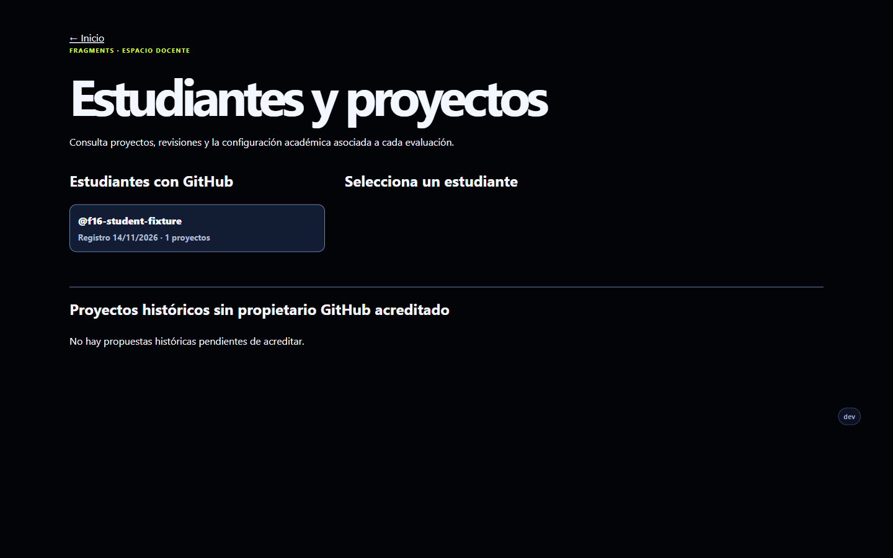
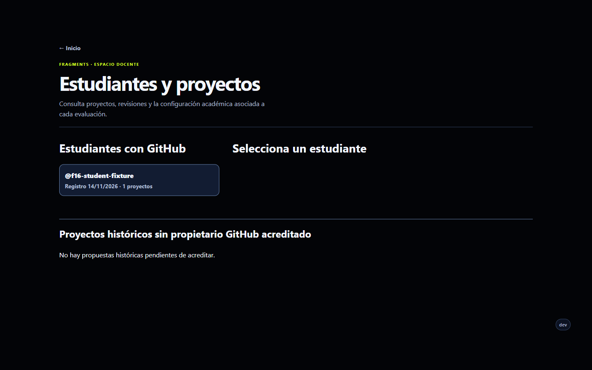
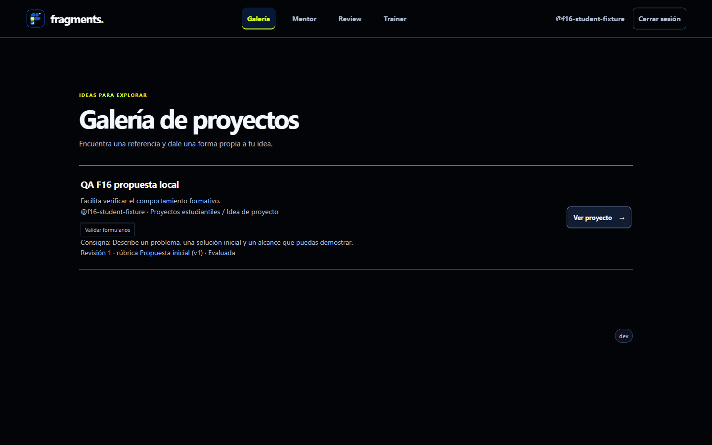
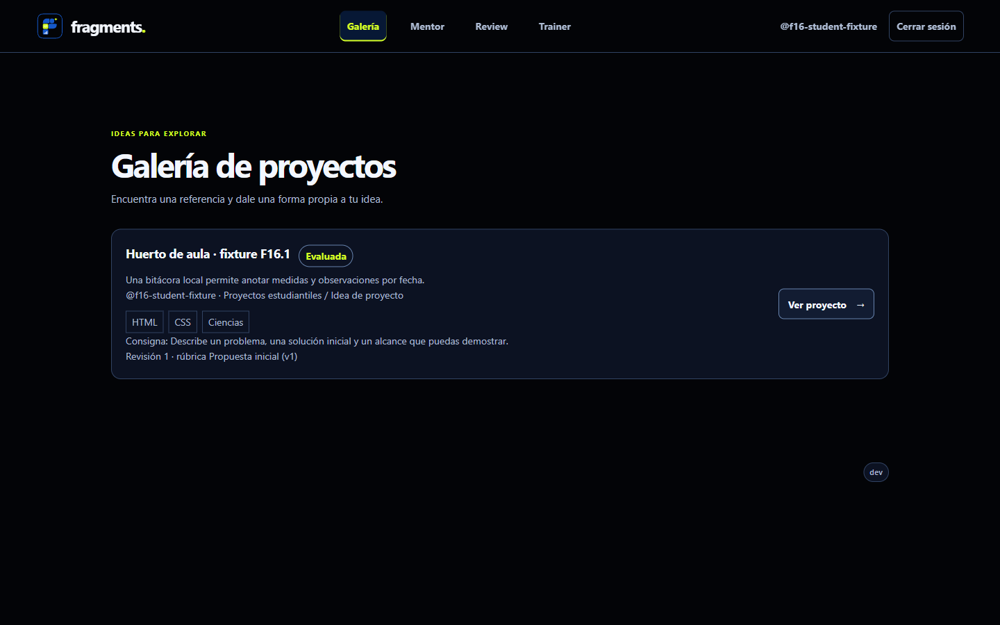
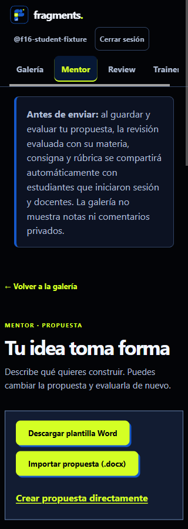
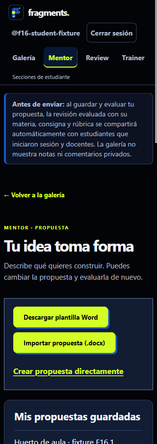
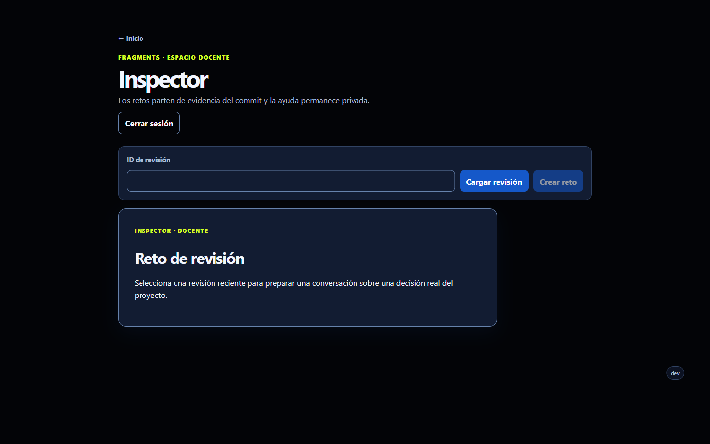
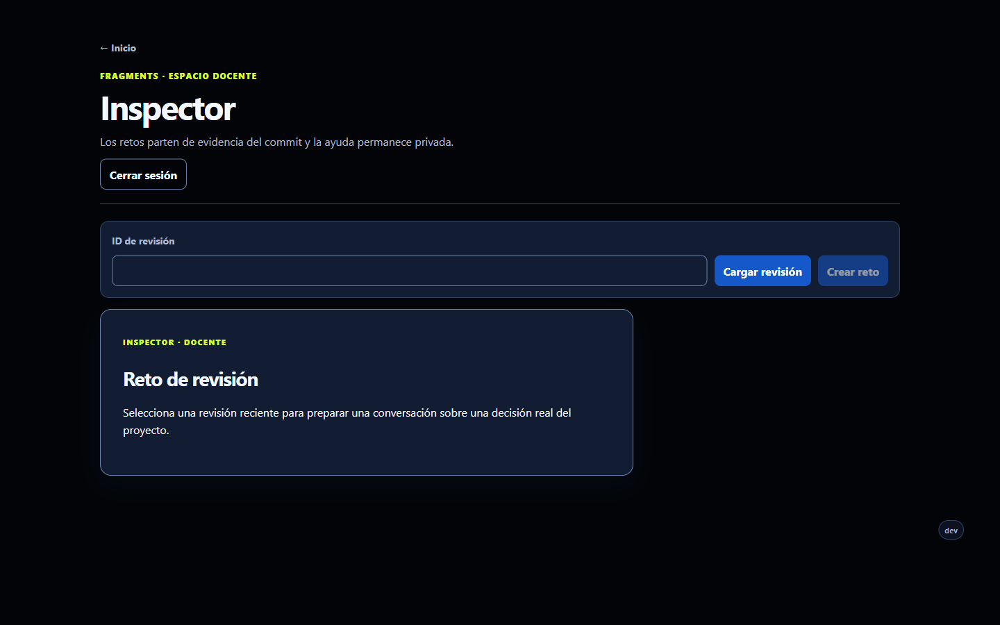
Desde la raíz del worktree, en PowerShell, compila los paquetes:
pnpm --filter @fragments/contracts build
pnpm --filter @fragments/api buildTerminal 1 — API local efímera, SQLite en memoria y providers fake:
node task-list/F16/qa-fixtures/api-server.mjsTerminal 2 — frontend local:
pnpm --filter @fragments/web dev --host 127.0.0.1Abre http://127.0.0.1:5173 y usa los enlaces directos de abajo. Gallery y Mentor requieren sesión; el fixture no ofrece OAuth real. Los usuarios/proyectos usan dominios sintéticos .example.test y la clave de prueba está declarada solo en el fixture. No introduzcas cuentas reales. GitHub OAuth y correo real permanecen desconectados. Detén ambos procesos con Ctrl+C; la base desaparece al parar la API.